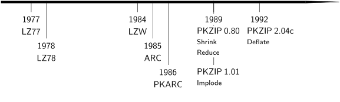

Shrink, Reduce, and Implode:
The Legacy Zip Compression Methods
(12 March 2021)
Last year I wrote a long article about Zip files, covering the history, describing the Deflate compression method in great detail, and showing the implementation of a simple Zip program. I was fascinated by the subject: the magic of data compression, and how this truly ubiquitous file format works.
Zip files support many different compression methods, however, and although Deflate is the one most commonly used today, it was not added until several years after the introduction of the Zip file format. While the earlier methods are not in themselves relevant anymore, the techniques involved are still both interesting and relevant. For example, the first method used LZW compression, which popularized dictionary compression, gained notoriety due to patent issues, and is still widely used in GIF files. From a historical perspective, the older methods allow us to trace the evolution from the roots of PKZip to the Deflate method that we use today.
This article describes and implements the Shrink, Reduce, and Implode compression methods. The previous article is not required reading, but provides useful background for readers without previous knowledge about Zip files. All the code is available in hwzip-2.0.zip.
Let's do data compression like it's 1989!
Many thanks to Ange Albertini, Mark Nelson, Jason Summers, Rui Ueyama, and Nico Weber who provided valuable feedback on drafts of this article.
Table of Contents
- Method 1: Shrink / Unshrink
- Methods 2–5: Reduce / Expand
- Method 6: Implode / Explode
- Conclusion
- Exercises
- Further Reading
- Linked Files

Method 1: Shrink / Unshrink
Phil Katz started out in the compression business by creating his own version of the then-popular Arc program, which he called PKArc. Following a legal dispute with the original program's creators, the "Arc Wars", Katz created his own file format: the Zip file. (For more history, see the previous article.)
Arc used a compression algorithm called LZW. Since Katz had implemented and made various improvements to the algorithm in his PKArc program, it was natural to use that experience when creating his new file format. The original PKZip compression method is an LZW variant which Katz called Shrink. It was first released in a beta version, PKZip 0.80, and then publicly released in PKZip 0.90 early 1989.
Like all Zip compression methods, Shrink is described in the application note that comes with PKZip. The description is very brief however, and assumes intimate familiarity with LZW.
LZW History
LZW was introduced in a 1984 paper by Terry Welch called A Technique for High-Performance Data Compression. It builds on an algorithm in a 1978 paper by Abraham Lempel and Jacob Ziv, hence the name: Lempel–Ziv–Welch (LZW) compression.
Terry Welch (1939–1988)
In contrast to Lempel and Ziv's paper (LZ78), which was published in a specialized scientific journal and focused more on theoretical results than a practical compression algorithm, Welch's paper was published in IEEE's Computer, a widely read magazine, and it introduced a practical and effective compression method in a very accessible way.
{kind=link}
In fact, the algorithm is so simple and well explained in Welch's paper that the reader is tempted to sit down and implement it—which is exactly what Spencer W. Thomas, then an Assistant Professor in the University of Utah's computer graphics group (the folks with the teapot) did. Thomas called his program Compress, and shared it with the world in a net.sources Usenet post.
Before LZW, the common compression programs were all based on variants of Huffman coding. Thomas's Usenet post makes comparisons with the Unix Compact and Pack programs, and Squeeze was popular in the PC world to the extent that Huffman coding was sometimes referred to as "squeezing". Those programs compress data by translating bytes to variable-length codes assigned by Huffman's algorithm: common bytes get shorter codes, yielding a smaller overall representation of the data. LZW, however, works on a higher level: instead of operating on individual bytes, it assigns codes to sequences of bytes, which can lead to much greater compression for sequences that occur repeatedly.
Compress soon became the de facto standard program for data compression on Unix, to the point that it was added to the Posix standard. LZW was also used in many other programs, in hardware, and in file formats—most notably the GIF image file format, which is perhaps its most common use today.
(Compress creates files with a .Z extension, which many people assume has something to do with Zip files. However, Compress predates the Zip file format by several years. Instead, the extension was probably inspired by Pack, which uses a lower-case .z for its output files. The origins of Pack are not entirely clear, but one early version was written by Steve Zucker at RAND. If that was the first version, perhaps the z is for Zucker.)
While Welch's paper did an excellent job of explaining LZW, it left out one important detail: the algorithm was patented. That caused major controversy in the software community a few years later when Unisys, the company who owned the patents, realized how widely used the algorithm was and started extracting licensing fees for it. This was especially problematic for GIF files. Though the patents have now thankfully expired, that ordeal made the algorithm infamous.
The LZW Algorithm
LZW is a dictionary-based compression method: the source data is parsed into substrings which occur in a dictionary, and the result of the algorithm is a sequence of codes referring to those dictionary entries. New entries are added to the dictionary as the input gets processed.
The dictionary is represented as a set of codes and their corresponding strings. Initially, it consists of all possible one-byte strings. The input data is then processed one byte at a time, accumulating into the "current string" as long as that string exists in the dictionary. When the current string extended with the next byte no longer exists in the dictionary, the code corresponding to the current string is output, the new string (current string + next byte) is added to the dictionary for later use, and the process continues with the next byte as current string. In the end, the sequence of output codes is the result of the compression.
For example, if we restrict the input to the English alphabet, the initial dictionary could look like this:
| Code | 1 | 2 | 3 | 4 | 5 | 6 | 7 | 8 | 9 | 10 | 11 | 12 | 13 | 14 | 15 | 16 | 17 | 18 | 19 | 20 | 21 | 22 | 23 | 24 | 25 | 26 |
|---|---|---|---|---|---|---|---|---|---|---|---|---|---|---|---|---|---|---|---|---|---|---|---|---|---|---|
| String | A | B | C | D | E | F | G | H | I | J | K | L | M | N | O | P | Q | R | S | T | U | V | W | X | Y | Z |
And to compress the string "LONDONER", the algorithm would proceed as follows:
| Input Character | Output Code | Added String | Current Code |
|---|---|---|---|
| L | — | — | 12 ("L") |
| O | 12 ("L") | "LO" (27) | 15 ("O") |
| N | 15 ("O") | "ON" (28) | 14 ("N") |
| D | 14 ("N") | "ND" (29) | 4 ("D") |
| O | 4 ("D") | "DO" (30) | 15 ("O") |
| N | — | — | 28 ("ON") |
| E | 28 ("ON") | "ONE" (31) | 5 ("E") |
| R | 5 ("E") | "ER" (32) | 18 ("R") |
| — | 18 ("R") | — | — |
The eight-character input has been compressed to the seven output codes: 12, 15, 14, 4, 28, 5, 18.
Expressed in pseudo-code, the algorithm goes like this:
initialize_dictionary();
current_code = get_input_byte();
while (more_input_available()) {
current_byte = get_input_byte();
new_string = dictionary[current_code] + current_byte;
if (new_string exists in dictionary) {
current_code = get_code_for(new_string);
} else {
output(current_code);
dictionary.add(new_string);
current_code = current_byte;
}
}
output(current_code);
LZW decompression also begins with a dictionary consisting of all one-byte strings. Input codes are processed by looking up and outputting the corresponding strings from the dictionary. The tricky part is updating the dictionary. When the compressor outputs a code, that code represents the "current string", and then the compressor adds that "current string" plus next byte to the dictionary. The decompressor cannot observe those updates to the dictionary directly, as it only sees the output codes. However, it can deduce the updates, because it knows that when it receives a new code, the string represented by the previous code plus the following byte was added to the dictionary, and that "following byte" is the first byte of the string represented by the current code.
Let's decompress the previous example:
| Input Code | Output String | Added String |
|---|---|---|
| 12 ("L") | "L" | — |
| 15 ("O") | "O" | "LO" (27) |
| 14 ("N") | "N" | "ON" (28) |
| 4 ("D") | "D" | "ND" (29) |
| 28 ("ON") | "ON" | "DO" (30) |
| 5 ("E") | "E" | "ONE" (31) |
| 18 ("R") | "R" | "ER" (32) |
Note how each added string is the previously output string plus the first byte of the next string.
There is however a snag here. Because the decompressor is always one step behind the compressor in adding to the dictionary, it's possible that a code gets used before the decompressor has added it to the dictionary.
Consider compression of the string "TAN BANANAS", ignoring the space:
| Input Character | Output Code | Added String | Current Code |
|---|---|---|---|
| T | — | — | 20 ("T") |
| A | 20 ("T") | "TA" (27) | 1 ("A") |
| N | 1 ("A") | "AN" (28) | 14 ("N") |
| B | 14 ("N") | "NB" (29) | 2 ("B") |
| A | 2 ("B") | "BA" (30) | 1 ("A") |
| N | — | — | 28 ("AN") |
| A | 28 ("AN") | "ANA" (31) | 1 ("A") |
| N | — | — | 28 ("AN") |
| A | — | — | 31 ("ANA") |
| S | 31 ("ANA") | "ANAS" (32) | 19 ("S") |
| — | 19 ("S") | — | — |
What's special about this example is that the code 31 ("ANA") is added to the dictionary when processing the third "A", and then immediately gets output, which means that the decompressor will not have had a chance to add it yet:
| Input Code | Output String | Added String |
|---|---|---|
| 20 ("T") | "T" | — |
| 1 ("A") | "A" | "TA" (27) |
| 14 ("N") | "N" | "AN" (28) |
| 2 ("B") | "B" | "NB" (29) |
| 28 ("AN") | "AN" | "BA" (30) |
| 31 ??? |
This is known as the LZW "KwKwK problem". If K is a byte, w a string of bytes, and Kw already exists in the dictionary, compressing the string KwKwK will cause a code for KwK to be added to the dictionary and then be immediately used, which means the decompressor will see the code before it exists in its dictionary. (In the example, K is "A" and w is "N".)
Luckily, this is the only situation where a code can be used before it's in the decompressor's dictionary, so it can be handled as a special case. When the decompressor receives an input code which is the next code that would be added to the dictionary, it knows it's a "KwKwK" situation, and that the code corresponds to the previously output string (Kw) extended with its first byte (K).
To finish the example:
| Input Code | Output String | Added String |
|---|---|---|
| 31 ("ANA") | "ANA" | "ANA" (31) |
| 19 ("S") | "S" | "ANAS" (32) |
Expressed in pseudo-code, the decompression algorithm goes like this:
initialize_dictionary();
current_code = get_input_code();
output(current_code);
while (more_input_available()) {
previous_code = current_code;
current_code = get_input_code();
if (current_code == next_unused_code()) {
/* Handle the KwKwK case. */
dictionary[current_code] = dictionary[previous_code] +
dictionary[previous_code][0];
output(dictionary[current_code]);
} else {
output(dictionary[current_code]);
dictionary.add(dictionary[previous_code] +
dictionary[current_code][0]);
}
}
Maintaining the Dictionary
Part of LZW's appeal is that it's relatively easy to implement. The following focuses on a practical implementation of PKZip's LZW variant.
Because of how the algorithm works, strings added to the dictionary are always composed of a prefix string already in the dictionary, extended with a single byte. That means dictionary entries can be represented in a memory-efficient way by storing just the code of the prefix and the extension byte.
| Code | Prefix Code | Extension Byte |
|---|---|---|
| 27 ("LO") | 12 ("L") | "O" |
| 28 ("ON") | 15 ("O") | "N" |
| 29 ("ND") | 14 ("N") | "D" |
| 30 ("DO") | 4 ("D") | "O" |
| 31 ("ONE") | 28 ("ON") | "E" |
| 32 ("ER") | 5 ("E") | "R" |
We can think of the dictionary as a tree structure (a form of trie). For example, the dictionary from the Londoner example above forms this tree:
Each node in the tree corresponds to a code and represents the string formed when walking from the root to the node, concatenating the bytes along the way. For example, the node on the lower-right represents the string "ONE" (code 31).
For compression, the dictionary representation needs to support quickly looking up a string (prefix + extension byte), or to insert the string if it doesn't exist. To accommodate this, we will store the compressor's dictionary tree nodes in a hash table with the prefix code and extension byte acting as key, and the code as the value. Instead of inserting the initial one-byte strings in the dictionary, we will treat them as implicitly present. The code is available in shrink.c.
#define MAX_CODE_SIZE 13
#define HASH_BITS (MAX_CODE_SIZE + 1) /* For a load factor of 0.5. */
#define HASHTAB_SIZE (1U << HASH_BITS)
/* Hash table where the keys are (prefix_code, ext_byte) pairs, and the values
* are the corresponding code. If prefix_code is INVALID_CODE it means the hash
* table slot is empty. */
typedef struct hashtab_t hashtab_t;
struct hashtab_t {
uint16_t prefix_code;
uint8_t ext_byte;
uint16_t code;
};
static void hashtab_init(hashtab_t *table)
{
size_t i;
for (i = 0; i < HASHTAB_SIZE; i++) {
table[i].prefix_code = INVALID_CODE;
}
}
To look up a string in the dictionary, we hash the prefix code and extension byte, and then scan the hash table linearly starting at the position determined by the hash:
static uint32_t hash(uint16_t code, uint8_t byte)
{
static const uint32_t HASH_MUL = 2654435761U;
/* Knuth's multiplicative hash. */
return ((((uint32_t)byte << 16) | code) * HASH_MUL) >> (32 - HASH_BITS);
}
/* Return the code corresponding to a prefix code and extension byte if it
exists in the table, or INVALID_CODE otherwise. */
static uint16_t hashtab_find(const hashtab_t *table, uint16_t prefix_code,
uint8_t ext_byte)
{
size_t i = hash(prefix_code, ext_byte);
assert(prefix_code != INVALID_CODE);
while (true) {
/* Scan until we find the key or an empty slot. */
assert(i < HASHTAB_SIZE);
if (table[i].prefix_code == prefix_code &&
table[i].ext_byte == ext_byte) {
return table[i].code;
}
if (table[i].prefix_code == INVALID_CODE) {
return INVALID_CODE;
}
i = (i + 1) % HASHTAB_SIZE;
assert(i != hash(prefix_code, ext_byte));
}
}
Inserting a string works similarly:
static void hashtab_insert(hashtab_t *table, uint16_t prefix_code,
uint8_t ext_byte, uint16_t code)
{
size_t i = hash(prefix_code, ext_byte);
assert(prefix_code != INVALID_CODE);
assert(code != INVALID_CODE);
assert(hashtab_find(table, prefix_code, ext_byte) == INVALID_CODE);
while (true) {
/* Scan until we find an empty slot. */
assert(i < HASHTAB_SIZE);
if (table[i].prefix_code == INVALID_CODE) {
break;
}
i = (i + 1) % HASHTAB_SIZE;
assert(i != hash(prefix_code, ext_byte));
}
assert(i < HASHTAB_SIZE);
table[i].code = code;
table[i].prefix_code = prefix_code;
table[i].ext_byte = ext_byte;
assert(hashtab_find(table, prefix_code, ext_byte) == code);
}
For decompression, the dictionary representation needs to support looking up or inserting a string with a specific code. This means we can keep the tree nodes in an array indexed by the code.
One problem with the tree representation is that when retrieving a string corresponding to a certain code, we look up the node for the code, walk from the node to the root, and encounter the string in the wrong order: it's in reverse.
Welch's paper suggests using a stack to output the string for a code in the right order: while walking from the node to the root, push the bytes on the stack, and afterwards output them in reverse by popping the stack until it's empty.
The stack approach, though it is commonly used in practice, is a little annoying because it effectively requires copying the data twice: first from the dictionary onto the stack, and then from the stack to the output destination.
If the length of the string were known before the tree walk, the bytes could be written directly to the output buffer in reverse. For example, if we knew that the string for code 31 ("ONE") is three bytes long, the initial byte in the tree walk (E) could be output directly to the third output position, the next byte (N) to the second, etc. Storing the string lengths in the dictionary requires a little more memory, but they are easy to add when inserting the strings: the length of a new string is the length of its prefix plus one.
Taking that technique one step further (thanks Nico!), observe that when the decompressor adds a new string to the dictionary, that string already exists in the output buffer: the new string is formed by taking the previously output string and appending the first character of the currently output string. So if the previously output string was N bytes long and output at index I, the new string is the N+1 bytes in the output buffer at position I. If we keep track of each string's position in the output buffer, we can copy it directly and don't have to walk the tree at all. In fact, we don't even need to store the tree; storing each string's length and output buffer position is enough. (For Shrink, we still need to store the tree to handle Partical Clearing, described below.) This scheme requires all the previous output to be available, so would not be suitable for streaming decompression, but should be much faster when possible. In a sense, this makes in-memory LZW decompression more similar to LZ77, described below.
We will represent the decompressor's dictionary to support that last approach.
#define MAX_CODE ((1U << MAX_CODE_SIZE) - 1)
#define INVALID_CODE UINT16_MAX
typedef struct codetab_t codetab_t;
struct codetab_t {
uint16_t prefix_code; /* INVALID_CODE means the entry is invalid. */
uint8_t ext_byte;
uint16_t len;
size_t last_dst_pos;
};
static void codetab_init(codetab_t *codetab)
{
size_t i;
/* Codes for literal bytes. Set a phony prefix_code so they're valid. */
for (i = 0; i <= UINT8_MAX; i++) {
codetab[i].prefix_code = (uint16_t)i;
codetab[i].ext_byte = (uint8_t)i;
codetab[i].len = 1;
}
for (; i <= MAX_CODE; i++) {
codetab[i].prefix_code = INVALID_CODE;
}
}
Reading and Writing Codes
An important consideration when implementing LZW compression is how many bits to use for the codes, the code size.
When compressing 8-bit bytes, we need to use at least 9-bit codes if we want to put anything besides the initial one-byte strings in the dictionary. Using more bits for the codes allows for a larger dictionary, which can be good for compression, but the larger dictionary does not necessarily pay for the increased size of each output code.
For example, if we use 9-bit codes for the Londoner example above, the seven output codes would take up 63 bits. If we used 10-bit codes instead, the dictionary could hold more strings, but the output would take 70 bits, which may be larger than the uncompressed size.
While the LZW paper states that using 12-bit codes is common, most implementations actually use variable-length codes. Spencer Thomas's original Compress program starts with 9-bit codes which can grow up to 16 bits. GIF files use between 3 and 9 bits initially depending on the number of colours in the image, and can grow the code size up to 12 bits. The idea is to avoid the overhead of a larger code size until the dictionary grows to potentially take advantage of it.
In the case of Compress and GIF, the compressor starts emitting codes using the initial code size, and then increases the size when inserting a code in the dictionary that doesn't fit within the current code size. For example, if the initial code size is 9 bits, the compressor would increase the size once it inserts code 512 (which requires 10 bits) into the dictionary. The decompressor must always use the same code size as the compressor, and it maintains the size in the same way: starting at the same initial size and increasing it when adding an entry that grows the dictionary beyond the limit of the current code size. In this way, the code size is kept in sync implicitly between the compressor and decompressor, similarly to the dictionary.
While synchronising the code size implicitly between compressor and decompressor is elegant, it has the disadvantage that it increases the code size potentially long before any code which requires the larger size is emitted. Just because a code is added to the dictionary doesn't mean it will be used soon, or ever. Instead, some LZW compressors use a special code to signal code size increases explicitly to the decompressor. That way, they can increase the code size just before emitting a code which requires the larger size.
PKZip's Shrink method uses codes between 9 and 13 bits wide, and signals code size increases explicitly by emitting a control code (256) followed by a one.
The codes are emitted least-significant-bit first, and we will re-use the bitstream implementation described in the previously article, which is available in bitstream.h. For reading and writing the LZW codes, we use helper functions that handle the code size adjustments internally:
#define MIN_CODE_SIZE 9
#define MAX_CODE_SIZE 13
#define MAX_CODE ((1U << MAX_CODE_SIZE) - 1)
#define INVALID_CODE UINT16_MAX
#define CONTROL_CODE 256
#define INC_CODE_SIZE 1
/* Write a code to the output bitstream, increasing the code size if necessary.
Returns true on success. */
static bool write_code(ostream_t *os, uint16_t code, size_t *code_size)
{
assert(code <= MAX_CODE);
while (code > (1U << *code_size) - 1) {
/* Increase the code size. */
assert(*code_size < MAX_CODE_SIZE);
if (!ostream_write(os, CONTROL_CODE, *code_size) ||
!ostream_write(os, INC_CODE_SIZE, *code_size)) {
return false;
}
(*code_size)++;
}
return ostream_write(os, code, *code_size);
}
The decompressor also needs to deal with a second control code, which will be explained in the next subsection.
#define PARTIAL_CLEAR 2
/* Read the next code from the input stream and return it in next_code. Returns
false if the end of the stream is reached. If the stream contains invalid
data, next_code is set to INVALID_CODE but the return value is still true. */
static bool read_code(istream_t *is, size_t *code_size, codetab_t *codetab,
code_queue_t *queue, uint16_t *next_code)
{
uint16_t code, control_code;
assert(sizeof(code) * CHAR_BIT >= *code_size);
code = (uint16_t)lsb(istream_bits(is), *code_size);
if (!istream_advance(is, *code_size)) {
return false;
}
/* Handle regular codes (the common case). */
if (code != CONTROL_CODE) {
*next_code = code;
return true;
}
/* Handle control codes. */
control_code = (uint16_t)lsb(istream_bits(is), *code_size);
if (!istream_advance(is, *code_size)) {
*next_code = INVALID_CODE;
return true;
}
if (control_code == INC_CODE_SIZE && *code_size < MAX_CODE_SIZE) {
(*code_size)++;
return read_code(is, code_size, codetab, queue, next_code);
}
if (control_code == PARTIAL_CLEAR) {
unshrink_partial_clear(codetab, queue);
return read_code(is, code_size, codetab, queue, next_code);
}
*next_code = INVALID_CODE;
return true;
}
When the Dictionary Gets Full
The maximum code size determines the number of possible codes and thereby the size of the dictionary. Since the LZW algorithm keeps adding strings to the dictionary, it can eventually get full. The LZW paper doesn't really address this, and it's an area where implementers can get creative.
The easiest solution is to do nothing: when the dictionary gets full, the program simply stops adding new strings to it, but still keeps going. This strategy was used by the original Compress program. The downside is that if the characteristics of the data change and the dictionary is no longer updated, the strings in the dictionary become less relevant and the compression suffers.
The solution at the other end of the spectrum is to clear the dictionary as soon as it gets full. This effectively divides the compressed data into blocks, with the algorithm "starting over" on a new block each time the dictionary fills up. This technique is used in GIF files, which have a designated "clear code" to signal when the dictionary gets cleared. The GIF compressor is free to emit this code at any time, not just when the table gets full. The specification points out (on the cover sheet) that the compressor may defer emitting the clear code and keep going with a full dictionary, but the implementations I've seen emit the clear code as soon as the dictionary fills up (ImageMagick, GIMP).
Other LZW implementations use approaches somewhere in between the two above. Starting with Version 3.0, the Compress program monitors the compression ratio after the dictionary fills up, and clears the table if the ratio drops, sometimes referred to as an adaptive reset. This allows compression to benefit from the strings in the full dictionary as long as they're useful, but also to adapt if the input changes so the dictionary becomes less relevant.
Phil Katz was presumably well familiar with these options. The LZW variant used by Arc, which Katz had based his PKArc program on, is called Crunch. It's described in the documentation for Arc 5.20 as using variable-length codes and adaptive reset. Howard Chu's Unix port of Arc has the source code and shows that the variable-length codes were between 9 and 12 bits. In the Revision History section of PKArc 3.5's documentation, Katz describes his Crunch implementation in version 1.1 as providing superior compression while being fully compatible with Arc. In order to stay compatible, the only thing he can have changed is when to perform adaptive resets. PKArc 2.0 added a new compression method which Katz called Squash. Katz published some notes about the method, explaining that it's similar to Crunch but with variable-length codes up to 13 bits instead of 12.
Shrink, the LZW method that Katz designed for his new PKZip program, is a more complex variant. What makes it special is that it handles full dictionaries by doing what Katz calls partial clearing. The way it's described in the application note is that it clears all leaf nodes from the LZW tree. In other words, it removes all the strings in the dictionary which aren't prefixes of other strings.
Partial clearing means the unassigned codes need to be managed differently. Normally, an LZW implementation keeps track of the next code to assign, increments it after each insert into the dictionary, and starts over when the dictionary is cleared. With partial clearing, however, one must keep track of exactly which codes are available. We will use the queue below for this purpose.
One way (thanks Rui!) to avoid the need for tracking unassigned codes like this would have been to renumber the used codes as part of partial clearing so that they form a contiguous set. I don't know whether Katz considered this.
typedef struct code_queue_t code_queue_t;
struct code_queue_t {
uint16_t next_idx;
uint16_t codes[MAX_CODE - CONTROL_CODE + 1];
};
static void code_queue_init(code_queue_t *q)
{
size_t code_queue_size;
uint16_t code;
code_queue_size = 0;
for (code = CONTROL_CODE + 1; code <= MAX_CODE; code++) {
q->codes[code_queue_size++] = code;
}
assert(code_queue_size < sizeof(q->codes) / sizeof(q->codes[0]));
q->codes[code_queue_size] = INVALID_CODE; /* End-of-queue marker. */
q->next_idx = 0;
}
/* Return the next code in the queue, or INVALID_CODE if the queue is empty. */
static uint16_t code_queue_next(const code_queue_t *q)
{
assert(q->next_idx < sizeof(q->codes) / sizeof(q->codes[0]));
return q->codes[q->next_idx];
}
/* Return and remove the next code from the queue, or return INVALID_CODE if
the queue is empty. */
static uint16_t code_queue_remove_next(code_queue_t *q)
{
uint16_t code = code_queue_next(q);
if (code != INVALID_CODE) {
q->next_idx++;
}
return code;
}
The queue gets updated after partial clearings. For decompression, performing partial clearing of the code table is fairly straight-forward:
static void unshrink_partial_clear(codetab_t *codetab, code_queue_t *queue)
{
bool is_prefix[MAX_CODE + 1] = {0};
size_t i, code_queue_size;
/* Scan for codes that have been used as a prefix. */
for (i = CONTROL_CODE + 1; i <= MAX_CODE; i++) {
if (codetab[i].prefix_code != INVALID_CODE) {
is_prefix[codetab[i].prefix_code] = true;
}
}
/* Clear "non-prefix" codes in the table; populate the code queue. */
code_queue_size = 0;
for (i = CONTROL_CODE + 1; i <= MAX_CODE; i++) {
if (!is_prefix[i]) {
codetab[i].prefix_code = INVALID_CODE;
queue->codes[code_queue_size++] = (uint16_t)i;
}
}
queue->codes[code_queue_size] = INVALID_CODE; /* End-of-queue marker. */
queue->next_idx = 0;
}
For compression, partial clearing gets a bit more complicated because of the hash table. Instead of trying to remove entries from the hash table, we insert the non-cleared entries into a new one:
static void shrink_partial_clear(hashtab_t *hashtab, code_queue_t *queue)
{
bool is_prefix[MAX_CODE + 1] = {0};
hashtab_t new_hashtab[HASHTAB_SIZE];
size_t i, code_queue_size;
/* Scan for codes that have been used as a prefix. */
for (i = 0; i < HASHTAB_SIZE; i++) {
if (hashtab[i].prefix_code != INVALID_CODE) {
is_prefix[hashtab[i].prefix_code] = true;
}
}
/* Build a new hash table with only the "prefix codes". */
hashtab_init(new_hashtab);
for (i = 0 ; i < HASHTAB_SIZE; i++) {
if (hashtab[i].prefix_code == INVALID_CODE ||
!is_prefix[hashtab[i].code]) {
continue;
}
hashtab_insert(new_hashtab, hashtab[i].prefix_code,
hashtab[i].ext_byte, hashtab[i].code);
}
memcpy(hashtab, new_hashtab, sizeof(new_hashtab));
/* Populate the queue with the "non-prefix" codes. */
code_queue_size = 0;
for (i = CONTROL_CODE + 1; i <= MAX_CODE; i++) {
if (!is_prefix[i]) {
queue->codes[code_queue_size++] = (uint16_t)i;
}
}
queue->codes[code_queue_size] = INVALID_CODE; /* End-of-queue marker. */
queue->next_idx = 0;
}
Surprising Effects of Partial Clearing
Partial clearing, at least the way Shrink does it, has a problem which I don't think Katz foresaw. Let's say we're inserting a new string "BANANA" into the dictionary. The prefix ("BANAN") has code 456, but the dictionary is full so no more codes are available. A partial clearing is performed. Now, if "BANAN" was not used as a prefix for any other strings in the dictionary so far, it will be removed from the dictionary and its code put back in the queue of available codes. It would have been reasonable to not remove that code since it's just about to be used as a prefix, but Katz did not make that choice.
Let's say that another code, 345, was also freed up in the partial clearing and is first in the code queue. It will be used for the newly inserted string with prefix code 456 and extension byte "A":
| Code | Prefix | Extension Byte | String |
|---|---|---|---|
| 345 | 456 | A | ???A |
Note that since 456 was cleared from the dictionary, it no longer represents "BANAN", and now we have code 345 in the dictionary with a prefix that doesn't exist. It's not a catastrophe since the compressor will not emit the code, but it's an odd state to be in.
If compression continues for a while, it's likely that 456 will get used when a new string is inserted into the dictionary, let's say "ERIC"; now suddenly 456 is a valid prefix for 345:
| Code | Prefix | Extension Byte | String |
|---|---|---|---|
| 345 | 456 | A | ERICA |
| 456 | ... | C | ERIC |
Surprisingly, we've ended up with a code for "ERICA" in the dictionary without intentionally inserting it. In fact, that string might not exist in the source data at all!
A second variation of this problem occurs if the prefix code is cleared and then becomes the first code in the queue of available codes. For example, let's say we're again inserting "BANANA", that the prefix ("BANAN") has code 456, and that the dictionary is full. Partial clearing is performed, and 456 becomes the first available code in the queue. Code 456 will now be inserted with itself as its prefix:
| Code | Prefix | Extension Byte | String |
|---|---|---|---|
| 456 | 456 | A | ??? |
Again, a most peculiar state. It's not a disaster, since the compressor will never use this code. However, the code is now lost forever: it will not become available after future partial clearings since it is used as a prefix, albeit in a pathological way. Does this ever happen? Yes. For example, when compressing a sufficiently long string of repeated bytes, PKZip's Shrink implementation will eventually tie up all available codes this way, leaving the literal (one-byte) codes as the only usable entries in the dictionary!
Because these pathological codes would never be used by the compressor, it's possible that Katz never noticed them. But for our implementation, where we want to store the length of each string in the dictionary during decompression, we need to handle that a string with an invalid prefix doesn't have a well-defined length until its prefix becomes valid.
Finishing the Implementation
With the code for managing the dictionary, reading and emitting codes, and performing partial clearing from above, we can now finish the Shrink implementation:
/* Compress (shrink) the data in src into dst. The number of bytes output, at
most dst_cap, is stored in *dst_used. Returns false if there is not enough
room in dst. */
bool hwshrink(const uint8_t *src, size_t src_len,
uint8_t *dst, size_t dst_cap, size_t *dst_used)
{
hashtab_t table[HASHTAB_SIZE];
code_queue_t queue;
ostream_t os;
size_t code_size, i;
uint8_t ext_byte;
uint16_t curr_code, next_code, new_code;
hashtab_init(table);
code_queue_init(&queue);
ostream_init(&os, dst, dst_cap);
code_size = MIN_CODE_SIZE;
if (src_len == 0) {
*dst_used = 0;
return true;
}
curr_code = src[0];
for (i = 1; i < src_len; i++) {
ext_byte = src[i];
/* Search for a code with the current prefix + byte. */
next_code = hashtab_find(table, curr_code, ext_byte);
if (next_code != INVALID_CODE) {
curr_code = next_code;
continue;
}
/* Write out the current code. */
if (!write_code(&os, curr_code, &code_size)) {
return false;
}
/* Assign a new code to the current prefix + byte. */
new_code = code_queue_remove_next(&queue);
if (new_code == INVALID_CODE) {
/* Try freeing up codes by partial clearing. */
shrink_partial_clear(table, &queue);
if (!ostream_write(&os, CONTROL_CODE, code_size) ||
!ostream_write(&os, PARTIAL_CLEAR, code_size)) {
return false;
}
new_code = code_queue_remove_next(&queue);
}
if (new_code != INVALID_CODE) {
hashtab_insert(table, curr_code, ext_byte, new_code);
}
/* Reset the parser starting at the byte. */
curr_code = ext_byte;
}
/* Write out the last code. */
if (!write_code(&os, curr_code, &code_size)) {
return false;
}
*dst_used = ostream_bytes_written(&os);
return true;
}
Decompressing, unshrinking, is a bit more complicated, especially because of the peculiar effects of partial clearing described above. We have split the logic for outputting a string from the dictionary into a separate function:
/* Output the string represented by a code into dst at dst_pos. Returns
* HWUNSHRINK_OK on success, and also updates *first_byte and *len with the
* first byte and length of the output string, respectively. */
static unshrnk_stat_t output_code(uint16_t code, uint8_t *dst, size_t dst_pos,
size_t dst_cap, uint16_t prev_code,
codetab_t *codetab, code_queue_t *queue,
uint8_t *first_byte, size_t *len)
{
uint16_t prefix_code;
assert(code <= MAX_CODE && code != CONTROL_CODE);
assert(dst_pos < dst_cap);
if (code <= UINT8_MAX) {
/* Output literal byte. */
*first_byte = (uint8_t)code;
*len = 1;
dst[dst_pos] = (uint8_t)code;
return HWUNSHRINK_OK;
}
if (codetab[code].prefix_code == INVALID_CODE ||
codetab[code].prefix_code == code) {
/* Reject invalid codes. Self-referential codes may exist in
* the table but cannot be used. */
return HWUNSHRINK_ERR;
}
if (codetab[code].len != UNKNOWN_LEN) {
/* Output string with known length (the common case). */
if (dst_cap - dst_pos < codetab[code].len) {
return HWUNSHRINK_FULL;
}
copy_from_prev_pos(dst, dst_cap, codetab[code].last_dst_pos,
dst_pos, codetab[code].len);
*first_byte = dst[dst_pos];
*len = codetab[code].len;
return HWUNSHRINK_OK;
}
/* Output a string of unknown length. This happens when the prefix
was invalid (due to partial clearing) when the code was inserted into
the table. The prefix can then become valid when it's added to the
table at a later point. */
assert(codetab[code].len == UNKNOWN_LEN);
prefix_code = codetab[code].prefix_code;
assert(prefix_code > CONTROL_CODE);
if (prefix_code == code_queue_next(queue)) {
/* The prefix code hasn't been added yet, but we were just
about to: the KwKwK case. Add the previous string extended
with its first byte. */
assert(codetab[prev_code].prefix_code != INVALID_CODE);
codetab[prefix_code].prefix_code = prev_code;
codetab[prefix_code].ext_byte = *first_byte;
codetab[prefix_code].len = codetab[prev_code].len + 1;
codetab[prefix_code].last_dst_pos =
codetab[prev_code].last_dst_pos;
dst[dst_pos] = *first_byte;
} else if (codetab[prefix_code].prefix_code == INVALID_CODE) {
/* The prefix code is still invalid. */
return HWUNSHRINK_ERR;
}
/* Output the prefix string, then the extension byte. */
*len = codetab[prefix_code].len + 1;
if (dst_cap - dst_pos < *len) {
return HWUNSHRINK_FULL;
}
copy_from_prev_pos(dst, dst_cap, codetab[prefix_code].last_dst_pos,
dst_pos, codetab[prefix_code].len);
dst[dst_pos + *len - 1] = codetab[code].ext_byte;
*first_byte = dst[dst_pos];
/* Update the code table now that the string has a length and pos. */
assert(prev_code != code);
codetab[code].len = (uint16_t)*len;
codetab[code].last_dst_pos = dst_pos;
return HWUNSHRINK_OK;
}
The routine for actually copying out the string works by copying eight bytes at a time, which means most strings just need one iteration of the copying loop:
/* Copy len bytes from dst[prev_pos] to dst[dst_pos]. */
static void copy_from_prev_pos(uint8_t *dst, size_t dst_cap,
size_t prev_pos, size_t dst_pos, size_t len)
{
size_t i;
uint64_t tmp;
assert(dst_pos < dst_cap);
assert(prev_pos < dst_pos);
assert(len > 0);
assert(len <= dst_cap - dst_pos);
if (round_up(len, 8) > dst_cap - dst_pos) {
/* Not enough room in dst for the sloppy copy below. */
memmove(&dst[dst_pos], &dst[prev_pos], len);
return;
}
if (prev_pos + len > dst_pos) {
/* Benign one-byte overlap possible in the KwKwK case. */
assert(prev_pos + len == dst_pos + 1);
assert(dst[prev_pos] == dst[prev_pos + len - 1]);
}
i = 0;
do {
/* Sloppy copy: 64 bits at a time; a few extra don't matter. */
memcpy(&tmp, &dst[prev_pos + i], 8);
memcpy(&dst[dst_pos + i], &tmp, 8);
i += 8;
} while (i < len);
}
With all that in place we can finally write the decompression function:
typedef enum {
HWUNSHRINK_OK, /* Unshrink was successful. */
HWUNSHRINK_FULL, /* Not enough room in the output buffer. */
HWUNSHRINK_ERR /* Error in the input data. */
} unshrnk_stat_t;
/* Decompress (unshrink) the data in src. The number of input bytes used, at
most src_len, is stored in *src_used on success. Output is written to dst.
The number of bytes written, at most dst_cap, is stored in *dst_used on
success. */
unshrnk_stat_t hwunshrink(const uint8_t *src, size_t src_len, size_t *src_used,
uint8_t *dst, size_t dst_cap, size_t *dst_used)
{
codetab_t codetab[MAX_CODE + 1];
code_queue_t queue;
istream_t is;
size_t code_size, dst_pos, i, len;
uint16_t curr_code, prev_code, new_code, c;
uint8_t first_byte;
unshrnk_stat_t s;
codetab_init(codetab);
code_queue_init(&queue);
istream_init(&is, src, src_len);
code_size = MIN_CODE_SIZE;
dst_pos = 0;
/* Handle the first code separately since there is no previous code. */
if (!read_code(&is, &code_size, codetab, &queue, &curr_code)) {
*src_used = istream_bytes_read(&is);
*dst_used = 0;
return HWUNSHRINK_OK;
}
assert(curr_code != CONTROL_CODE);
if (curr_code > UINT8_MAX) {
return HWUNSHRINK_ERR; /* The first code must be a literal. */
}
if (dst_pos == dst_cap) {
return HWUNSHRINK_FULL;
}
first_byte = (uint8_t)curr_code;
dst[dst_pos] = (uint8_t)curr_code;
codetab[curr_code].last_dst_pos = dst_pos;
dst_pos++;
prev_code = curr_code;
while (read_code(&is, &code_size, codetab, &queue, &curr_code)) {
if (curr_code == INVALID_CODE) {
return HWUNSHRINK_ERR;
}
if (dst_pos == dst_cap) {
return HWUNSHRINK_FULL;
}
/* Handle KwKwK: next code used before being added. */
if (curr_code == code_queue_next(&queue)) {
if (codetab[prev_code].prefix_code == INVALID_CODE) {
/* The previous code is no longer valid. */
return HWUNSHRINK_ERR;
}
/* Extend the previous code with its first byte. */
assert(curr_code != prev_code);
codetab[curr_code].prefix_code = prev_code;
codetab[curr_code].ext_byte = first_byte;
codetab[curr_code].len = codetab[prev_code].len + 1;
codetab[curr_code].last_dst_pos =
codetab[prev_code].last_dst_pos;
assert(dst_pos < dst_cap);
dst[dst_pos] = first_byte;
}
/* Output the string represented by the current code. */
s = output_code(curr_code, dst, dst_pos, dst_cap, prev_code,
codetab, &queue, &first_byte, &len);
if (s != HWUNSHRINK_OK) {
return s;
}
/* Verify that the output matches walking the prefixes. */
c = curr_code;
for (i = 0; i < len; i++) {
assert(codetab[c].len == len - i);
assert(codetab[c].ext_byte ==
dst[dst_pos + len - i - 1]);
c = codetab[c].prefix_code;
}
/* Add a new code to the string table if there's room.
The string is the previous code's string extended with
the first byte of the current code's string. */
new_code = code_queue_remove_next(&queue);
if (new_code != INVALID_CODE) {
assert(codetab[prev_code].last_dst_pos < dst_pos);
codetab[new_code].prefix_code = prev_code;
codetab[new_code].ext_byte = first_byte;
codetab[new_code].len = codetab[prev_code].len + 1;
codetab[new_code].last_dst_pos =
codetab[prev_code].last_dst_pos;
if (codetab[prev_code].prefix_code == INVALID_CODE) {
/* prev_code was invalidated in a partial
* clearing. Until that code is re-used, the
* string represented by new_code is
* indeterminate. */
codetab[new_code].len = UNKNOWN_LEN;
}
/* If prev_code was invalidated in a partial clearing,
* it's possible that new_code==prev_code, in which
* case it will never be used or cleared. */
}
codetab[curr_code].last_dst_pos = dst_pos;
dst_pos += len;
prev_code = curr_code;
}
*src_used = istream_bytes_read(&is);
*dst_used = dst_pos;
return HWUNSHRINK_OK;
}
Methods 2–5: Reduce / Expand
Access to information was very different back in the late 1980s when PKZip was developed. Even though many fundamental compression techniques are much older, learning about them may not have been so easy. While we can just search the web for information today, the web didn't exist back then. Accessing academic papers, or even books on compression, would have been difficult without access to a good university library.
Katz presumably learned about LZW compression from reading Welch's article and working with SEA's Arc program. PKZip's next compression method, Reduce, uses LZ77 compression, which he appears to have learned about from a program called Scrnch, by Graeme W. McRae. The sdk.doc file in PKZip 0.80 says that Katz licensed the technology from McRae for use in PKZip. This is also discussed in a review of PKZip by Robert Blacher.
Reduce is perhaps the most exotic of PKZip's compression methods. It was part of the earliest PKZip versions behind the -e flag for "extra compression", but after the introduction of the Implode method described later, PKZip would no longer perform Reduce compression, preferring Shrink or Implode instead. Decompressing, "expanding", reduced files was still supported, though.
The compression combines LZ77 dictionary compression with a simple statistical compression mechanism, follower sets. Even though method numbers 2–5 refer to this method, it's just one method with four different "compression factors".
We will describe the method by walking through an implementation, starting with the code for decompression. The code is available in reduce.h and reduce.c.
Expand: Follower Sets
Reduce-compressed data starts with 256 follower sets, one for each possible byte. Each set contains up to 32 follower bytes, bytes which commonly occur immediately after the byte whose set they belong to. For example, in English text a T is frequently followed by an H, so H might be included in the follower set for T.
Each follower set is preceded by a 6-bit number indicating the size of the set, followed by the bytes in that set. For some reason the sets come in reverse order, with the set for byte 255 first and byte 0 last.
/* Number of bits used to represent indices in a follower set of size n. */
static uint8_t follower_idx_bw(size_t n)
{
assert(n <= 32);
if (n > 16) { return 5; }
if (n > 8) { return 4; }
if (n > 4) { return 3; }
if (n > 2) { return 2; }
if (n > 0) { return 1; }
return 0;
}
typedef struct follower_set_t follower_set_t;
struct follower_set_t {
uint8_t size;
uint8_t idx_bw;
uint8_t followers[32];
};
/* Read the follower sets from is into fsets. Returns true on success. */
static bool read_follower_sets(istream_t *is, follower_set_t *fsets)
{
int i, j;
uint8_t n;
for (i = 255; i >= 0; i--) {
n = (uint8_t)lsb(istream_bits(is), 6);
if (n > 32) {
return false;
}
if (!istream_advance(is, 6)) {
return false;
}
fsets[i].size = n;
fsets[i].idx_bw = follower_idx_bw(n);
for (j = 0; j < fsets[i].size; j++) {
fsets[i].followers[j] = (uint8_t)istream_bits(is);
if (!istream_advance(is, 8)) {
return false;
}
}
}
return true;
}
After reading the follower sets, the decompressor processes the input bitstream into a series of bytes. To produce a byte, the follower set of the previous byte is checked. If the previous byte has a non-empty follower set, a single bit is read to decide whether to use the set or not. If the set is used, an index into the set is read from the bitstream, with the number of bits read depending on the size of the set.
For example, if the follower set for T consists of the letters H and E (in that order), a single bit would be used for indexing into the set. So if the previous character was T, an E would be represented by a 0 bit to indicate that the follower set is being used, followed by a 1 bit to select E from the set.
This way, fewer bits are used to represent frequent pairs of bytes, a simple context-based statistical compression.
/* Read the next byte from is, decoded based on prev_byte and the follower sets.
The byte is returned in *out_byte. The function returns true on success,
and false on bad data or end of input. */
static bool read_next_byte(istream_t *is, uint8_t prev_byte,
const follower_set_t *fsets, uint8_t *out_byte)
{
uint64_t bits;
uint8_t idx_bw, follower_idx;
bits = istream_bits(is);
if (fsets[prev_byte].size == 0) {
/* No followers; read a literal byte. */
*out_byte = (uint8_t)bits;
return istream_advance(is, 8);
}
if (lsb(bits, 1) == 1) {
/* Don't use the follower set; read a literal byte. */
*out_byte = (uint8_t)(bits >> 1);
return istream_advance(is, 1 + 8);
}
/* The bits represent the index of a follower byte. */
idx_bw = fsets[prev_byte].idx_bw;
follower_idx = (uint8_t)lsb(bits >> 1, idx_bw);
if (follower_idx >= fsets[prev_byte].size) {
return false;
}
*out_byte = fsets[prev_byte].followers[follower_idx];
return istream_advance(is, 1 + idx_bw);
}
Expand: LZ77
The second ingredient in Reduce compression is an algorithm which, as described in the PKZip application note, "compresses repeated byte sequences". This description has led to a common misconception that it's some form of run-length encoding, but it actually means a form of LZ77 compression.
LZ77 is described in detail in the previous article. The main idea is to represent the data as a sequence of literal bytes and back references, where back references refer to previous parts of the data. For example, in
It was the best of times,
it was the worst of times,
the string "t was the " is used repeatedly. With LZ77 compression, the second occurrence can be represented by a back reference (26,10) which means that the decompressor should go 26 bytes back—the back reference distance—in the data and copy 10 bytes—the back reference length.
Back references can also overlap with themselves. For example, "Fa-la-la-la-la" can be compressed as "Fa-la(3,9)". While PKZip's Reduce implementation doesn't appear to ever emit such backrefs, the application note doesn't disallow it. In order to be liberal in what we accept but conservative in what we do, our implementation will handle overlapping backrefs, but never emit them.
Additionally, Reduce allows referencing bytes before the start of the output buffer. Those bytes are treated as implicit zeros.
As opposed to LZW, which updates its dictionary by adding one-byte extensions of existing entries, LZ77 treats all recently processed data as the dictionary, and generally achieves much better compression.
Reduce compression uses a special byte value (144) to mark back references. In the PKZip application note, it's called DLE, which I'm guessing stands for distance-length encoding.
If the DLE byte is followed by a zero byte, it's not a back reference, but should be output as a literal byte. Otherwise, the DLE byte is followed by two or three bytes which encode the length and distance of the back reference.
The first byte following the DLE byte is called V in the application note. Depending on the compression factor, between 4 and 7 of the least significant bits of V are used for the back reference length. If those bits are all ones, they are added to an extra length byte following V. This sum is then offset by the minimum back reference length which is 3. The maximum back reference length can be computed like this:
static size_t max_len(int comp_factor)
{
size_t v_len_bits = (size_t)(8 - comp_factor);
assert(comp_factor >= 1 && comp_factor <= 4);
/* Bits in V + extra len byte + implicit 3. */
return ((1U << v_len_bits) - 1) + 255 + 3;
}
After V and any extra length byte comes a byte which we will call W. Together with the most significant bits of V, those that weren't used for the length, W determines the distance of the back reference. The value is offset by the minimum distance, which is 1. The maximum distance depends on the compression factor like this:
static size_t max_dist(int comp_factor)
{
size_t v_dist_bits = (size_t)(comp_factor);
assert(comp_factor >= 1 && comp_factor <= 4);
/* Bits in V * 256 + W byte + implicit 1. */
return ((1U << v_dist_bits) - 1) * 256 + 255 + 1;
}
That means the maximum length and distance vary between 273–385 and 512–4,096, respectively, depending on the compression factor. Higher compression factors trade shorter back reference length for larger distance, often leading to better compression since a larger search window increases the chances of finding matching substrings.
Reduce-compressed data contains no marker to signal the end of the compressed data, and since compressed artifacts can be smaller than one byte (the smallest follower set reference uses 2 bits), the decompressor needs to know the expected uncompressed size in order to know when to stop.
The decompression code consists of a loop which reads bytes using the procedures above, and decodes the back reference lengths and distances. It uses the lz77_output_backref64() function in lz77.h, described in the previous article, for fast copying of the backrefs.
#define DLE_BYTE 144
typedef enum {
HWEXPAND_OK, /* Expand was successful. */
HWEXPAND_ERR /* Error in the input data. */
} expand_stat_t;
/* Decompress (expand) the data in src. The uncompressed data is uncomp_len
bytes long and was compressed with comp_factor. The number of input bytes
used, at most src_len, is written to *src_used on success. Output is written
to dst. */
expand_stat_t hwexpand(const uint8_t *src, size_t src_len, size_t uncomp_len,
int comp_factor, size_t *src_used, uint8_t *dst)
{
istream_t is;
follower_set_t fsets[256];
size_t v_len_bits, dst_pos, len, dist, i;
uint8_t curr_byte, v;
assert(comp_factor >= 1 && comp_factor <= 4);
istream_init(&is, src, src_len);
if (!read_follower_sets(&is, fsets)) {
return HWEXPAND_ERR;
}
/* Number of bits in V used for backref length. */
v_len_bits = (size_t)(8 - comp_factor);
dst_pos = 0;
curr_byte = 0; /* The first "previous byte" is implicitly zero. */
while (dst_pos < uncomp_len) {
/* Read a literal byte or DLE marker. */
if (!read_next_byte(&is, curr_byte, fsets, &curr_byte)) {
return HWEXPAND_ERR;
}
if (curr_byte != DLE_BYTE) {
/* Output a literal byte. */
dst[dst_pos++] = curr_byte;
continue;
}
/* Read the V byte which determines the length. */
if (!read_next_byte(&is, curr_byte, fsets, &curr_byte)) {
return HWEXPAND_ERR;
}
if (curr_byte == 0) {
/* Output a literal DLE byte. */
dst[dst_pos++] = DLE_BYTE;
continue;
}
v = curr_byte;
len = (size_t)lsb(v, v_len_bits);
if (len == (1U << v_len_bits) - 1) {
/* Read an extra length byte. */
if (!read_next_byte(&is, curr_byte, fsets,
&curr_byte)) {
return HWEXPAND_ERR;
}
len += curr_byte;
}
len += 3;
/* Read the W byte, which together with V gives the distance. */
if (!read_next_byte(&is, curr_byte, fsets, &curr_byte)) {
return HWEXPAND_ERR;
}
dist = (v >> v_len_bits) * 256 + curr_byte + 1;
assert(len <= max_len(comp_factor));
assert(dist <= max_dist(comp_factor));
/* Output the back reference. */
if (round_up(len, 8) <= uncomp_len - dst_pos &&
dist <= dst_pos) {
/* Enough room and no implicit zeros; chunked copy. */
lz77_output_backref64(dst, dst_pos, dist, len);
dst_pos += len;
} else if (len > uncomp_len - dst_pos) {
/* Not enough room. */
return HWEXPAND_ERR;
} else {
/* Copy, handling overlap and implicit zeros. */
for (i = 0; i < len; i++) {
if (dist > dst_pos) {
dst[dst_pos++] = 0;
continue;
}
dst[dst_pos] = dst[dst_pos - dist];
dst_pos++;
}
}
}
*src_used = istream_bytes_read(&is);
return HWEXPAND_OK;
}
Reduce: Follower Sets
For compression, we will again tackle the two layers of Reduce separately, starting with the follower sets.
We will provide a function, write_byte(), as an interface for feeding bytes through the follower set compression to an output bitstream.
In order to choose the follower sets which yield the best compression for a sequence of bytes, the entire byte sequence would need to be considered. Either our compressor would need to store those bytes internally until the follower sets are computed, or it could do two passes: first analysing the byte stream to build the follower sets, and then using the follower sets to write the byte stream in the second pass. Both approaches are inelegant since they would potentially require a lot of memory, or extra time to process the data twice.
Instead, our compressor will accumulate a certain number of bytes into a fixed-sized buffer, and then compute the follower sets based on those bytes. That "raw bytes buffer" and other state, is held in a struct:
#define RAW_BYTES_SZ (64 * 1024)
#define NO_FOLLOWER_IDX UINT8_MAX
typedef struct reduce_state_t reduce_state_t;
struct reduce_state_t {
ostream_t os;
int comp_factor;
uint8_t prev_byte;
bool raw_bytes_flushed;
/* Raw bytes buffer. */
uint8_t raw_bytes[RAW_BYTES_SZ];
size_t num_raw_bytes;
/* Map from (prev_byte,curr_byte) to follower_idx or NO_FOLLOWER_IDX. */
uint8_t follower_idx[256][256];
uint8_t follower_idx_bw[256];
};
The write_byte() function stores bytes into the buffer. Once the buffer is full, the follower sets are computed, written to the output stream, and the contents of the buffer as well as any subsequent writes are written to the stream using the follower sets:
static bool write_byte(reduce_state_t *s, uint8_t byte)
{
uint8_t follower_idx, follower_idx_bw;
if (!s->raw_bytes_flushed) {
/* Accumulate bytes which will be used for computing the
follower sets. */
assert(s->num_raw_bytes < RAW_BYTES_SZ);
s->raw_bytes[s->num_raw_bytes++] = byte;
if (s->num_raw_bytes == RAW_BYTES_SZ) {
/* Write follower sets and flush the bytes. */
return flush_raw_bytes(s);
}
return true;
}
follower_idx = s->follower_idx[s->prev_byte][byte];
follower_idx_bw = s->follower_idx_bw[s->prev_byte];
s->prev_byte = byte;
if (follower_idx != NO_FOLLOWER_IDX) {
/* Write (LSB-first) a 0 bit followed by the follower index. */
return ostream_write(&s->os,
(uint64_t)follower_idx << 1,
follower_idx_bw + 1);
}
if (follower_idx_bw != 0) {
/* Not using the follower set.
Write (LSB-first) a 1 bit followed by the literal byte. */
return ostream_write(&s->os, (uint64_t)(byte << 1) | 0x1, 9);
}
/* No follower set; write the literal byte. */
return ostream_write(&s->os, byte, 8);
}
When flushing the raw bytes buffer, the follower sets are computed first, and then write_byte() can be re-used for writing out the bytes:
static bool flush_raw_bytes(reduce_state_t *s)
{
size_t i;
s->raw_bytes_flushed = true;
if (!write_follower_sets(s)) {
return false;
}
for (i = 0; i < s->num_raw_bytes; i++) {
if (!write_byte(s, s->raw_bytes[i])) {
return false;
}
}
return true;
}
To compute the follower set for a byte, we will count how many times each possible follower occurs directly after that byte, and then sort those followers in descending order of frequency using the struct and comparison function below:
struct follower {
uint8_t byte;
size_t count;
};
static int follower_cmp(const void *a, const void *b)
{
const struct follower *l = a;
const struct follower *r = b;
/* Sort descending by count. */
if (l->count < r->count) { return 1; }
if (l->count > r->count) { return -1; }
/* Break ties by sorting ascending by byte. */
if (l->byte > r->byte) { return 1; }
if (l->byte < r->byte) { return -1; }
assert(l->count == r->count && l->byte == r->byte);
return 0;
}
A follower set should contain the most frequently occurring followers, so once they are sorted, the remaining task is to decide how many of them to include. This is an optimization problem: a larger follower set requires more bits to represent and more bits for the index each time a follower is used. On the other hand, a literal byte requires more bits than a follower set reference.
Since the number of possible sizes is small, and we only need to compute the follower sets once, we will use a brute force approach: consider each size and pick the one which yields the lowest total cost based on the follower counts.
/* The cost in bits for writing the follower bytes using follower set size n. */
static size_t followers_cost(const struct follower *followers, size_t n)
{
size_t cost, i;
/* Cost for storing the follower set. */
cost = n * 8;
/* Cost for follower bytes in the set. */
for (i = 0; i < n; i++) {
cost += followers[i].count * (1 + follower_idx_bw(n));
}
/* Cost for follower bytes not in the set. */
for (; i < 256; i++) {
if (n == 0) {
cost += followers[i].count * 8;
} else {
cost += followers[i].count * (1 + 8);
}
}
return cost;
}
The code below computes and writes the follower sets.
/* Compute and write the follower sets based on the raw bytes buffer. */
static bool write_follower_sets(reduce_state_t *s)
{
size_t follower_count[256][256] = {{0}};
struct follower followers[256];
int prev_byte, curr_byte;
size_t i, cost, min_cost, min_cost_size;
/* Count followers. */
prev_byte = 0;
for (i = 0; i < s->num_raw_bytes; i++) {
curr_byte = s->raw_bytes[i];
follower_count[prev_byte][curr_byte]++;
prev_byte = curr_byte;
}
for (curr_byte = UINT8_MAX; curr_byte >= 0; curr_byte--) {
/* Initialize follower indices to invalid. */
for (i = 0; i <= UINT8_MAX; i++) {
s->follower_idx[curr_byte][i] = NO_FOLLOWER_IDX;
}
/* Sort the followers for curr_byte. */
for (i = 0; i <= UINT8_MAX; i++) {
followers[i].byte = (uint8_t)i;
followers[i].count = follower_count[curr_byte][i];
}
qsort(followers, 256, sizeof(followers[0]), follower_cmp);
/* Find the follower set size with the lowest cost. */
min_cost_size = 0;
min_cost = followers_cost(followers, 0);
for (i = 1; i <= 32; i++) {
cost = followers_cost(followers, i);
if (cost < min_cost) {
min_cost_size = i;
min_cost = cost;
}
}
/* Save the follower indices. */
for (i = 0; i < min_cost_size; i++) {
s->follower_idx[curr_byte][followers[i].byte] =
(uint8_t)i;
}
s->follower_idx_bw[curr_byte] = follower_idx_bw(min_cost_size);
/* Write the followers. */
if (!ostream_write(&s->os, min_cost_size, 6)) {
return false;
}
for (i = 0; i < min_cost_size; i++) {
if (!ostream_write(&s->os, followers[i].byte, 8)) {
return false;
}
}
}
return true;
}
Reduce: LZ77
For the LZ77 component of Reduce, we will use the implementation described in the previous article, with code available in lz77.h and lz77.c. To use it, we need to implement callbacks for handling literals and backrefs.
Literal bytes are simply passed through to the write_byte() function. A DLE byte needs to be followed by a zero byte to be interpreted as a literal value:
static bool lit_callback(uint8_t lit, void *aux)
{
reduce_state_t *s = aux;
if (!write_byte(s, lit)) {
return false;
}
if (lit == DLE_BYTE) {
return write_byte(s, 0);
}
return true;
}
For back references, we write a DLE byte followed by the bytes which represent the backref length and distance:
static bool backref_callback(size_t dist, size_t len, void *aux)
{
reduce_state_t *s = aux;
size_t v_len_bits = (size_t)(8 - s->comp_factor);
uint8_t v, elb, w;
assert(len >= 3 && len <= max_len(s->comp_factor));
assert(dist >= 1 && dist <= max_dist(s->comp_factor));
assert(len <= dist && "Backref shouldn't self-overlap.");
/* The implicit part of len and dist are not encoded. */
len -= 3;
dist -= 1;
/* Write the DLE marker. */
if (!write_byte(s, DLE_BYTE)) {
return false;
}
/* Write V. */
v = (uint8_t)min(len, (1U << v_len_bits) - 1);
assert(dist / 256 <= (1U << s->comp_factor) - 1);
v |= (dist / 256) << v_len_bits;
assert(v != 0 && "The byte following DLE must be non-zero.");
if (!write_byte(s, v)) {
return false;
}
if (len >= (1U << v_len_bits) - 1) {
/* Write extra length byte. */
assert(len - ((1U << v_len_bits) - 1) <= UINT8_MAX);
elb = (uint8_t)(len - ((1U << v_len_bits) - 1));
if (!write_byte(s, elb)) {
return false;
}
}
/* Write W. */
w = (uint8_t)(dist % 256);
if (!write_byte(s, w)) {
return false;
}
return true;
}
With the callbacks in place, we call the LZ77 code to drive the compression:
/* Compress (reduce) the data in src into dst using the specified compression
factor (1--4). The number of bytes output, at most dst_cap, is stored in
*dst_used. Returns false if there is not enough room in dst. */
bool hwreduce(const uint8_t *src, size_t src_len, int comp_factor,
uint8_t *dst, size_t dst_cap, size_t *dst_used)
{
reduce_state_t s;
ostream_init(&s.os, dst, dst_cap);
s.comp_factor = comp_factor;
s.prev_byte = 0;
s.raw_bytes_flushed = false;
s.num_raw_bytes = 0;
if (!lz77_compress(src, src_len,
max_dist(comp_factor), max_len(comp_factor),
/*allow_overlap=*/ false,
lit_callback, backref_callback, &s)) {
return false;
}
if (!s.raw_bytes_flushed && !flush_raw_bytes(&s)) {
return false;
}
*dst_used = ostream_bytes_written(&s.os);
return true;
}
Method 6: Implode / Explode
Of all the compression and decompression algorithms, Implode and Explode probably have the coolest names. They're also a big step towards what's used in modern Zip compression: Deflate and Inflate (described in the previous article). The differences are described at the end of this section.
Implode was introduced with PKZip 1.01 in July 1989, and is similar to Reduce in that it uses LZ77 compression. However, instead of the follower sets used by Reduce, Implode uses Huffman coding to encode the output from LZ77.
(PKWare also used Implode in their Data Compression Library (DCL), a software library which could be used to embed the compression algorithm in other programs. Confusingly, DCL Implode is different from regular Implode. The format is described in a Usenet post by Ben Rudiak-Gould, and the Zlib maintainer Mark Adler has written a decompressor for it. DCL Implode was later added to the PKZip application note as Method 10, but without any description of how it works.)
Like the previous methods, we will explain Implode and Explode by walking through an implementation, starting with decompression to get an understanding of the format. The code is available in implode.h and implode.c.
Explode
Huffman coding is described in detail in the previous article. It's a method for assigning binary codewords to a set of symbols, with more common symbols receiving shorter codewords. Implode uses this to encode the LZ77 backref distances, lengths, and optionally the literal bytes.
(Actually, the application note never mentions Huffman coding—neither for Implode nor Deflate—but Shannon-Fano coding, which is an older technique that tries to accomplish the same thing but with less optimal results.)
Implode uses two or three different Huffman codes, depending on whether literal bytes should be Huffman coded or not. The codes are stored at the beginning of the compressed data. As is common with Huffman codes, the codewords themselves are not stored, only the codeword lengths. The codewords can then be reconstructed from the lengths as what is called a canonical Huffman code.
The codeword lengths used by Implode can be between 1 and 16 bits, and are run-length encoded as a sequence of bytes where the least significant four bits of each byte denote the codeword length minus one, and the other bits represent the run-length minus one. For example, 0x21 encodes 3 codeword lengths of 2 bits. An initial byte stores the number of bytes used to represent the code minus one.
The function below reads a Huffman code:
/* Initialize the Huffman decoder d with num_lens codeword lengths read from is.
Returns false if the input is invalid. */
static bool read_huffman_code(istream_t *is, size_t num_lens,
huffman_decoder_t *d)
{
uint8_t lens[256];
uint8_t byte, codeword_len, run_length;
size_t num_bytes, byte_idx, codeword_idx, i;
uint16_t len_count[17] = {0};
int32_t avail_codewords;
bool ok;
assert(num_lens <= sizeof(lens) / sizeof(lens[0]));
/* Number of bytes representing the Huffman code. */
byte = (uint8_t)lsb(istream_bits(is), 8);
num_bytes = (size_t)byte + 1;
if (!istream_advance(is, 8)) {
return false;
}
codeword_idx = 0;
for (byte_idx = 0; byte_idx < num_bytes; byte_idx++) {
byte = (uint8_t)lsb(istream_bits(is), 8);
if (!istream_advance(is, 8)) {
return false;
}
codeword_len = (byte & 0xf) + 1; /* Low four bits plus one. */
run_length = (byte >> 4) + 1; /* High four bits plus one. */
assert(codeword_len >= 1 && codeword_len <= 16);
assert(codeword_len < sizeof(len_count) / sizeof(len_count[0]));
len_count[codeword_len] += run_length;
if (codeword_idx + run_length > num_lens) {
return false; /* Too many codeword lengths. */
}
for (i = 0; i < run_length; i++) {
assert(codeword_idx < num_lens);
lens[codeword_idx++] = codeword_len;
}
}
assert(codeword_idx <= num_lens);
if (codeword_idx < num_lens) {
return false; /* Too few codeword lengths. */
}
Implode does an interesting twist on canonical Huffman codes: it assigns the codewords in reverse order. Canonical codes assign codewords to the symbols sorted by codeword length, normally starting with an all-zeros codeword for the first and shortest symbol, and finishing with all ones for the last and longest symbol. Implode, however, starts by assigning all zeros to the last codeword, and works its way back to the first. For example, if we have one 1-bit codeword and two 2-bit codewords, they would normally be 0, 10, and 11, but Implode would use the codewords 1, 01, and 00 instead.
In order to re-use the Huffman decoder described in the previous article (code in huffman.h and huffman.c), we have to convert from Implode's canonical code to the regular canonical code that the decoder uses. It turns out that this is as easy as flipping the bits: the all-ones first codeword becomes all zeros, the all-zeros last codeword becomes all ones, and it works for the codewords in between too.
The bit flipping trick only works when all available codewords are used, though. For example, if we had a code consisting of three 2-bit codewords, they would normally be 00, 01, 10, but Implode would use 10, 01, 00, and we could not simply flip the bits to convert between them. Viewed in terms of Huffman trees, this problem would occur if the tree is not full in the sense that every node has zero or two children (see the left tree below). However, because of how Huffman's algorithm (and Shannon-Fano's) work, such a tree would never actually be constructed: a new node is always created with two children. A code with three 2-bit codewords would never be created; instead the code would use one 1-bit and two 2-bit codewords (the right tree below).

While a code which doesn't use all available codewords shouldn't occur in practice, it is possible to represent such a code in the input data. We check for and reject such codes:
/* Check that the Huffman tree is full. */
avail_codewords = 1;
for (i = 1; i <= 16; i++) {
assert(avail_codewords >= 0);
avail_codewords *= 2;
avail_codewords -= len_count[i];
if (avail_codewords < 0) {
/* Higher count than available codewords. */
return false;
}
}
if (avail_codewords != 0) {
/* Not all codewords were used. */
return false;
}
ok = huffman_decoder_init(d, lens, num_lens);
assert(ok && "The checks above mean the tree should be valid.");
return true;
}
With the function for reading Huffman codes in place, we can start working on the main decompression function.
Explode uses two or three Huffman codes: one for backref lengths, one for distances, and optionally a third code for literal bytes. Whether literal bytes are Huffman coded is controlled by a flag which is stored as metadata in the Zip file (bit 2 in the "general purpose bit flag" field).
typedef enum {
HWEXPLODE_OK, /* Explode was successful. */
HWEXPLODE_ERR /* Error in the input data. */
} explode_stat_t;
/* Decompress (explode) the data in src. The uncompressed data is uncomp_len
bytes long. large_wnd is true if a large window was used for compression,
lit_tree is true if literals were Huffman coded, and pk101_bug_compat is
true if compatibility with PKZip 1.01/1.02 is desired. The number of input
bytes used, at most src_len, is written to *src_used on success. Output is
written to dst. */
explode_stat_t hwexplode(const uint8_t *src, size_t src_len, size_t uncomp_len,
bool large_wnd, bool lit_tree, bool pk101_bug_compat,
size_t *src_used, uint8_t *dst)
{
istream_t is;
huffman_decoder_t lit_decoder, len_decoder, dist_decoder;
size_t dst_pos, used, used_tot, dist, len, i;
uint64_t bits;
int sym, min_len;
istream_init(&is, src, src_len);
if (lit_tree) {
if (!read_huffman_code(&is, 256, &lit_decoder)) {
return HWEXPLODE_ERR;
}
}
if (!read_huffman_code(&is, 64, &len_decoder) ||
!read_huffman_code(&is, 64, &dist_decoder)) {
return HWEXPLODE_ERR;
}
Another metadata flag controls the maximum back reference distance, which is either 4,096 or 8,192 bytes (bit 1 in the "general purpose bit flag" field).
The minimum back reference length depends on whether literal bytes are Huffman coded or not. If they are, the minimum back reference is 3 bytes long, otherwise it's 2. The reasoning was probably that a two-byte string is likely to be more efficiently represented as two Huffman-coded literals than a backref.
It appears that PKZip versions 1.01 and 1.02 got the minimum back reference length computation wrong, considering the flag for window size instead of the flag for Huffman coded literals. This is described in a blog post by Jason Summers, and was also previously discussed on Usenet. Because of this bug, the PKZip 1.01 distribution file cannot be extracted by later PKZip versions (although it still self-extracts). In order to extract files compressed with the buggy behaviour, we will support it with a flag:
if (pk101_bug_compat) {
min_len = (large_wnd ? 3 : 2);
} else {
min_len = (lit_tree ? 3 : 2);
}
If min_len is wrong, the extracted data is unlikely to have the expected length, in which case the caller can try again with the pk101_bug_compat flag set.
Implode uses a one-bit marker to differentiate between literal bytes and back references. Literals are represented by a 1 bit followed by the byte, possibly Huffman coded. Note how the input bits are flipped when passed to huffman_decode due to Implode's reverse canonical Huffman code described above:
dst_pos = 0;
while (dst_pos < uncomp_len) {
bits = istream_bits(&is);
if (lsb(bits, 1) == 0x1) {
/* Literal. */
bits >>= 1;
if (lit_tree) {
sym = huffman_decode(&lit_decoder,
(uint16_t)~bits, &used);
assert(sym >= 0 && "huffman decode successful");
if (!istream_advance(&is, 1 + used)) {
return HWEXPLODE_ERR;
}
} else {
sym = (int)lsb(bits, 8);
if (!istream_advance(&is, 1 + 8)) {
return HWEXPLODE_ERR;
}
}
assert(sym >= 0 && sym <= UINT8_MAX);
dst[dst_pos++] = (uint8_t)sym;
continue;
}
Back references are signalled by a 0 bit, followed by encodings of the distance and length. The distance is encoded in two parts, with the 6 or 7 (depending on the window size) least significant bits stored directly in the bitstream, and the remaining 6 bits Huffman coded. The length is encoded as a Huffman-coded 6-bit value, followed by an extra byte if the first bits are all ones.
/* Backref. */
assert(lsb(bits, 1) == 0x0);
used_tot = 1;
bits >>= 1;
/* Read the low dist bits. */
if (large_wnd) {
dist = (size_t)lsb(bits, 7);
bits >>= 7;
used_tot += 7;
} else {
dist = (size_t)lsb(bits, 6);
bits >>= 6;
used_tot += 6;
}
/* Read the Huffman-encoded high dist bits. */
sym = huffman_decode(&dist_decoder, (uint16_t)~bits, &used);
assert(sym >= 0 && "huffman decode successful");
used_tot += used;
bits >>= used;
dist |= (size_t)sym << (large_wnd ? 7 : 6);
dist += 1;
/* Read the Huffman-encoded len. */
sym = huffman_decode(&len_decoder, (uint16_t)~bits, &used);
assert(sym >= 0 && "huffman decode successful");
used_tot += used;
bits >>= used;
len = (size_t)(sym + min_len);
if (sym == 63) {
/* Read an extra len byte. */
len += (size_t)lsb(bits, 8);
used_tot += 8;
bits >>= 8;
}
assert(used_tot <= ISTREAM_MIN_BITS);
if (!istream_advance(&is, used_tot)) {
return HWEXPLODE_ERR;
}
With the distance and length decoded, the back reference can be copied the same way as for Reduce compression.
The same rules as for Reduce apply: backrefs may self-overlap, and bytes before the start of the output buffer are implicit zeros. In contrast to Reduce, PKZip's Implode implementation does emit self-overlapping back references. That makes the implicit zeros feature superfluous since a run of N zeros can be encoded with a self-overlapping backref as 0(1,N).
if (round_up(len, 8) <= uncomp_len - dst_pos &&
dist <= dst_pos) {
/* Enough room and no implicit zeros; chunked copy. */
lz77_output_backref64(dst, dst_pos, dist, len);
dst_pos += len;
} else if (len > uncomp_len - dst_pos) {
/* Not enough room. */
return HWEXPLODE_ERR;
} else {
/* Copy, handling overlap and implicit zeros. */
for (i = 0; i < len; i++) {
if (dist > dst_pos) {
dst[dst_pos++] = 0;
continue;
}
dst[dst_pos] = dst[dst_pos - dist];
dst_pos++;
}
}
}
*src_used = istream_bytes_read(&is);
return HWEXPLODE_OK;
}
Implode
Since the same set of Huffman codes is used for the whole compression process, we should ideally consider all of the data to generate the best codes. Since this is not practical, we will use the same approach as for Reduce, and base our encoding on the first part of the data.
As for Reduce, LZ77 back references and literals will be accumulated into a fixed-size buffer, after which we compute the Huffman codes and start writing to the actual output stream. In contrast to Reduce, the LZ77 tokens are not encoded as bytes, but instead we store the actual backrefs and literals in the buffer:
#define BUFFER_CAP (32 * 1024)
typedef struct implode_state_t implode_state_t;
struct implode_state_t {
bool large_wnd;
bool lit_tree;
struct {
uint16_t dist; /* Backref dist, or 0 for literals. */
uint16_t litlen; /* Literal byte (dist=0) or backref length. */
} buffer[BUFFER_CAP];
size_t buffer_size;
bool buffer_flushed;
uint16_t lit_freqs[256];
uint16_t dist_sym_freqs[64];
uint16_t len_sym_freqs[64];
ostream_t os;
huffman_encoder_t lit_encoder;
huffman_encoder_t len_encoder;
huffman_encoder_t dist_encoder;
};
While inserting into the buffer, we also count the frequencies of each symbol. We will use those when generating the Huffman codes.
Handling literals is straight-forward:
static bool lit_callback(uint8_t lit, void *aux)
{
implode_state_t *s = aux;
if (s->buffer_flushed) {
return write_lit(s, lit);
}
assert(s->buffer_size < BUFFER_CAP);
s->buffer[s->buffer_size ].dist = 0;
s->buffer[s->buffer_size++].litlen = lit;
s->lit_freqs[lit]++;
if (s->buffer_size == BUFFER_CAP) {
return flush_buffer(s);
}
return true;
}
For backrefs we also have to figure out what symbols will be Huffman coded for the length and distance:
static size_t max_dist(bool large_wnd) {
return large_wnd ? 8192 : 4096;
}
static size_t max_len(bool lit_tree) {
return (lit_tree ? 3 : 2) + 63 + 255;
}
static int dist_sym(size_t dist, bool large_wnd)
{
assert(dist >= 1);
assert(dist <= max_dist(large_wnd));
dist -= 1;
return (int)(dist >> (large_wnd ? 7 : 6));
}
static int len_sym(size_t len, bool lit_tree)
{
assert(len >= (lit_tree ? 3 : 2));
assert(len <= max_len(lit_tree));
len -= (lit_tree ? 3 : 2);
if (len < 63) {
return (int)len;
}
return 63; /* The remainder is in a separate byte. */
}
static bool backref_callback(size_t dist, size_t len, void *aux)
{
implode_state_t *s = aux;
assert(dist >= 1);
assert(dist <= max_dist(s->large_wnd));
assert(len >= (s->lit_tree ? 3 : 2));
assert(len <= max_len(s->lit_tree));
if (s->buffer_flushed) {
return write_backref(s, dist, len);
}
assert(s->buffer_size < BUFFER_CAP);
s->buffer[s->buffer_size ].dist = (uint16_t)dist;
s->buffer[s->buffer_size++].litlen = (uint16_t)len;
s->dist_sym_freqs[dist_sym(dist, s->large_wnd)]++;
s->len_sym_freqs[len_sym(len, s->lit_tree)]++;
if (s->buffer_size == BUFFER_CAP) {
return flush_buffer(s);
}
return true;
}
When the buffer is full, we set up the Huffman encoders based on the frequencies of the symbols, write the symbols to the output stream, and flush the buffer:
static void init_encoder(huffman_encoder_t *e, uint16_t *freqs, size_t n)
{
size_t i, scale_factor;
uint16_t freq_sum, zero_freqs;
assert(BUFFER_CAP <= UINT16_MAX &&
"Frequency sum must be guaranteed to fit in 16 bits.");
freq_sum = 0;
zero_freqs = 0;
for (i = 0; i < n; i++) {
freq_sum += freqs[i];
zero_freqs += (freqs[i] == 0);
}
scale_factor = UINT16_MAX / (freq_sum + zero_freqs);
assert(scale_factor >= 1);
for (i = 0; i < n; i++) {
if (freqs[i] == 0) {
/* The Huffman encoder was designed for Deflate, which
* excludes zero-frequency symbols from the code. That
* doesn't work with Implode, so enforce a minimum
* frequency of one. */
freqs[i] = 1;
continue;
}
/* Scale up to emphasise difference to the zero-freq symbols. */
freqs[i] *= scale_factor;
assert(freqs[i] >= 1);
}
huffman_encoder_init(e, freqs, n, /*max_codeword_len=*/ 16);
/* Flip the bits to get the Implode-style canonical code. */
for (i = 0; i < n; i++) {
assert(e->lengths[i] >= 1);
e->codewords[i] = (uint16_t)lsb(~e->codewords[i],
e->lengths[i]);
}
}
static bool write_huffman_code(ostream_t *os, const uint8_t *codeword_lengths,
size_t num_syms)
{
struct {
uint8_t len;
uint8_t num;
} rle[256];
size_t rle_size, i;
assert(num_syms > 0);
assert(num_syms <= sizeof(rle) / sizeof(rle[0]));
/* Run-length encode the codeword lengths. */
rle[0].len = codeword_lengths[0];
rle[0].num = 1;
rle_size = 1;
for (i = 1; i < num_syms; i++) {
if (rle[rle_size - 1].len == codeword_lengths[i] &&
rle[rle_size - 1].num < 16) {
rle[rle_size - 1].num++;
continue;
}
assert(rle_size < sizeof(rle) / sizeof(rle[0]));
rle[rle_size ].len = codeword_lengths[i];
rle[rle_size++].num = 1;
}
/* Write the number of run-length encoded lengths. */
assert(rle_size >= 1);
if (!ostream_write(os, rle_size - 1, 8)) {
return false;
}
/* Write the run-length encoded lengths. */
for (i = 0; i < rle_size; i++) {
assert(rle[i].num >= 1 && rle[i].num <= 16);
assert(rle[i].len >= 1 && rle[i].len <= 16);
if (!ostream_write(os, rle[i].len - 1, 4) ||
!ostream_write(os, rle[i].num - 1, 4)) {
return false;
}
}
return true;
}
static bool flush_buffer(implode_state_t *s)
{
size_t i;
assert(!s->buffer_flushed);
if (s->lit_tree) {
init_encoder(&s->lit_encoder, s->lit_freqs, 256);
if (!write_huffman_code(&s->os, s->lit_encoder.lengths, 256)) {
return false;
}
}
init_encoder(&s->len_encoder, s->len_sym_freqs, 64);
if (!write_huffman_code(&s->os, s->len_encoder.lengths, 64)) {
return false;
}
init_encoder(&s->dist_encoder, s->dist_sym_freqs, 64);
if (!write_huffman_code(&s->os, s->dist_encoder.lengths, 64)) {
return false;
}
for (i = 0; i < s->buffer_size; i++) {
if (s->buffer[i].dist == 0) {
if (!write_lit(s, (uint8_t)s->buffer[i].litlen)) {
return false;
}
} else {
if (!write_backref(s, s->buffer[i].dist,
s->buffer[i].litlen)) {
return false;
}
}
}
s->buffer_flushed = true;
return true;
}
With the Huffman encoders set up, we write literals and backrefs using the encoding described in the Explode section:
static bool write_lit(implode_state_t *s, uint8_t lit)
{
/* Literal marker bit. */
if (!ostream_write(&s->os, 0x1, 1)) {
return false;
}
if (s->lit_tree) {
/* Huffman coded literal. */
return ostream_write(&s->os, s->lit_encoder.codewords[lit],
s->lit_encoder.lengths[lit]);
}
/* Raw literal. */
return ostream_write(&s->os, lit, 8);
}
static bool write_backref(implode_state_t *s, size_t dist, size_t len)
{
int d, l;
size_t num_dist_bits, extra_len;
d = dist_sym(dist, s->large_wnd);
l = len_sym(len, s->lit_tree);
/* Backref marker bit. */
if (!ostream_write(&s->os, 0x0, 1)) {
return false;
}
/* Lower dist bits. */
assert(dist >= 1);
num_dist_bits = (s->large_wnd ? 7 : 6);
if (!ostream_write(&s->os, lsb(dist - 1, num_dist_bits),
num_dist_bits)) {
return false;
}
/* Upper 6 dist bits, Huffman coded. */
if (!ostream_write(&s->os, s->dist_encoder.codewords[d],
s->dist_encoder.lengths[d])) {
return false;
}
/* Huffman coded length. */
if (!ostream_write(&s->os, s->len_encoder.codewords[l],
s->len_encoder.lengths[l])) {
return false;
}
if (l == 63) {
/* Extra length byte. */
extra_len = len - 63 - (s->lit_tree ? 3 : 2);
assert(extra_len <= UINT8_MAX);
if (!ostream_write(&s->os, extra_len, 8)) {
return false;
}
}
return true;
}
With all those functions in place, we can call the LZ77 code to drive the compression:
/* Compress (implode) the data in src into dst, using a large window and Huffman
coding of literals as specified by the flags. The number of bytes output, at
most dst_cap, is stored in *dst_used. Returns false if there is not enough
room in dst. */
bool hwimplode(const uint8_t *src, size_t src_len,
bool large_wnd, bool lit_tree,
uint8_t *dst, size_t dst_cap, size_t *dst_used)
{
implode_state_t s;
s.large_wnd = large_wnd;
s.lit_tree = lit_tree;
s.buffer_size = 0;
s.buffer_flushed = false;
memset(s.dist_sym_freqs, 0, sizeof(s.dist_sym_freqs));
memset(s.len_sym_freqs, 0, sizeof(s.len_sym_freqs));
memset(s.lit_freqs, 0, sizeof(s.lit_freqs));
ostream_init(&s.os, dst, dst_cap);
if (!lz77_compress(src, src_len, max_dist(large_wnd),
max_len(lit_tree), /*allow_overlap=*/true,
lit_callback, backref_callback, &s)) {
return false;
}
if (!s.buffer_flushed && !flush_buffer(&s)) {
return false;
}
*dst_used = ostream_bytes_written(&s.os);
return true;
}
From Implode to Deflate
Since the release of PKZIP 2 in 1992, Zip files predominantly use the Deflate compression method, described in the previous article. Implode is similar to Deflate in that they both combine LZ77 and Huffman coding. However now that we know the details of Implode, we can see that Deflate contains several important improvements:
- Deflate uses a larger window, allowing back reference distances up to 32 kilobytes. While small by modern standards, that's significantly larger than Implode's 8 kilobytes, and large enough to still be useful today.
- Implode uses the same Huffman codes for all of the data, whereas Deflate breaks the data into blocks with separate Huffman codes. This allows Deflate to adapt to changes in the data. Processing the data one block at a time also allows for better streaming compression.
- The Deflate blocks contain flags indicating the block's type and whether it's the last block, making the compressed data self-contained as opposed to Implode which relies on metadata for the uncompressed size and number of Huffman codes etc. A block can also use a pre-defined "static" Huffman code, giving it very low overhead as opposed to Implode which must always transmit at least two Huffman codes with 64 symbols each.
- Like Implode, Deflate transmits the Huffman codes in the compression output as a set of codeword lengths, but in Deflate those codeword lengths are themselves compressed with run-length and Huffman coding in a scheme that has been described as devilishly complex. (Salomon & Motta, Handbook of Data Compression (Springer 2010) S. 6.2.5.2)
- Instead of using a separate Huffman code for literal bytes, Deflate uses one Huffman code for both literal bytes and back reference lengths. The first 256 values are for literal bytes, and the other values represent lengths (or marks the end of the block). This clever trick avoids the need for a marker bit to differentiate between literals and backrefs.
- Deflate encodes distances more efficiently, with short distances using only Huffman coding, and longer distances an increasing number of extra bits, as opposed to Implode which always uses six bits in addition to the Huffman codeword.
Many of these techniques were already in use in the LHA compression program, and it's likely that Phil Katz learned them from there. Haruhiko Okumura's History of Data Compression in Japan specifically mentions the combined literal and length encoding, Huffman encoding the codeword lengths, and that he was in contact with a PKZip programmer.
Conclusion
We have seen above how PKZip's legacy compression methods work, and how they are implemented in HWZip. The routines in zip.c for reading and writing Zip files have been updated to handle the new (old) methods. The full set of source files is available in hwzip-2.0.zip. There are build instructions in the previous post.
With all the methods in place, we can compare their efficiency when compressing Shakespeare's Hamlet:
| Method | Store | Shrink | Reduce | Implode | Deflate |
|---|---|---|---|---|---|
| Size (bytes) | 204,908 | 93,900 | 101,872 | 85,741 | 79,708 |
| Relative Size | 100% | 46% | 50% | 42% | 39% |
| Compression Ratio | 1.00 | 2.18 | 2.01 | 2.39 | 2.57 |
| Compression Speed (MB/s) | — | 38.2 | 20.6 | 38.1 | 19.6 |
| Decompression Speed (MB/s) | — | 153.9 | 137.0 | 256.3 | 303.2 |
(Reduce used compression factor 4, Implode used the large window and Huffman coded literals. Speed was measured on a laptop from 2013; the code was built with Clang 11.)
All methods are able to cut the size in half, with Implode being the clear winner among the legacy methods.
Exercises
- Write a fast decompressor for Unix Compress (.Z) files. Use the technique of storing string lengths and last positions in the LZW dictionary.
- Try to improve the Shrink implementation. For example, avoid the surprising effects of partial clearing by not doing partial clearing if it would clear the current code. Or consider sometimes doing a partial reset instead of increasing the code size.
- Improve the Reduce or Implode compression by choosing the follower sets or Huffman code based on the full source data, either by using a dynamically sized buffer or by doing two passes of LZ77: one to gather statistics and one to write the data.
Further Reading
- Jason Summers has written many interesting blog posts about Zip files, including information about old PKZip versions, their compression methods and bugs. He has also written decompression routines for the legacy methods.
- Mark Nelson's LZW article in Dr Dobb's Journal probably made the algorithm even more popular. The Data Compression Book, 2nd ed. (Mark Nelson & Jean-loup Gailly, M&T Books 1995) explains LZ77, LZ78, and LZW in detail, as well as how they relate to each other.
- Mike Frysinger chronicles the history of Compress on the ncompress web site.
Linked Files
These are the files linked from this article and their SHA-256 hash values.
| hwzip-2.0.zip | 2136285dd19024fba551307d3cc32a429e2db9e0fb91f0ce6bf11563efe15510 |
| pkz080.zip | a1253a1be26ee718e00ca3d4e533baeb843aae2be31d8c64cfdf47efbbcad07d |
| pkz090.exe | 21978159874a6a388eaad3d338c0864dbcfeb8c72d80f95a2177c4c7cc3a2ac2 |
| APPNOTE-2.0.txt | 688431765d2b0bc87ea8872cd7b12d5ca2405dcc2bae72046a2a70fb7f369b27 |
| arc520.com | 74d2d031e9edca8d1a69a56fd258c895e7118ac1e98d1c874e3ac29e7749d5b9 |
| arc-5.21p.tar.gz | eacf870a245f155a4ba8c6f8e0fbb2e8a267aafa157f56ba7a8cb1d74fd8b5a1 |
| pkx35a35.exe | 05425765d934c38926a3108d24280e39a5452d57c8867e7e743d4f6bec30cd44 |
| SQSHINFO.DOC | 82bb5048fd0070daeae17bfa3a2c702ef0ee0f31af1972f5f64ad16cb52066f2 |
| SCRNC102.ZIP | bb1663f6cfefb9f2b517b5f2ff9888ca6fe427d2b8eb8a10043be3c966ce940d |
| pkz101.exe | f36d9551c1917a7990db2b4582191656d748179ea2bd15499294388e9c4fa458 |